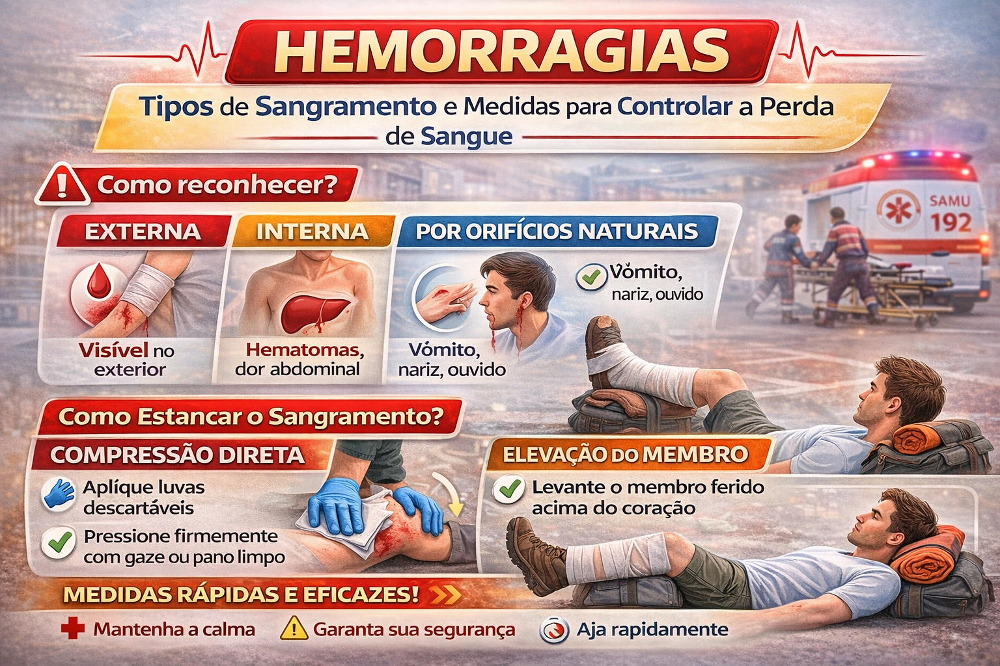

O que é hemorragia?
Hemorragia é a perda de sangue por lesão de vasos. Sangramentos intensos podem ameaçar a vida em poucos minutos e devem ser controlados rapidamente.

Sinais de gravidade
- Sangramento intenso, contínuo ou que encharca rapidamente curativos.
- Pele pálida, fria e úmida.
- Tontura, fraqueza, confusão ou desmaio.
- Suspeita de sangramento interno após trauma importante.
O que fazer
- Use luvas ou outra barreira quando houver risco de contato com sangue.
- Faça pressão manual direta, firme e contínua sobre o ferimento com gaze ou pano limpo.
- Se o material encharcar, coloque novas camadas por cima e mantenha a pressão; não fique retirando a primeira compressa para “olhar”.
- Após controlar o sangramento, um curativo compressivo pode ajudar a manter a hemostasia.
- Se houver curativo hemostático e a equipe tiver treinamento, ele pode ser utilizado como complemento à pressão direta.
- Em hemorragia de extremidade com risco de vida que não é controlada por pressão direta, um torniquete comercial pode ser usado por pessoa treinada; registre o horário de aplicação.
- Acione o SAMU (192) em sangramento grave. Acione o Corpo de Bombeiros (193) quando houver necessidade de salvamento, vítima presa ou risco ambiental.
Sangramento nasal
- Sente a pessoa e incline-a levemente para frente.
- Aperte a parte macia do nariz continuamente por cerca de 10 a 15 minutos.
- Peça para respirar pela boca e não inclinar a cabeça para trás.
O que não fazer
- Não remova objetos encravados; estabilize-os e aguarde atendimento especializado.
- Não use elevação do membro como técnica principal de controle da hemorragia.
- Não afrouxe um torniquete já aplicado em hemorragia com risco de vida; aguarde a equipe especializada.
- Não introduza objetos em nariz ou ouvido para tentar estancar sangramento.
Referência de atualização: American Heart Association / American Red Cross — 2024 Guidelines for First Aid.